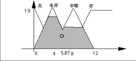
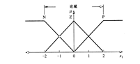
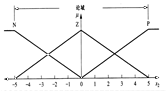
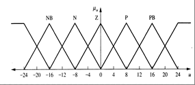
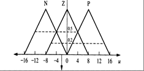
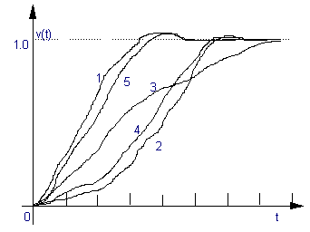

模糊系统
由那些模糊现象引起相互作用的不确定性系统，即它的状态或输入、输出具有模糊性。
模糊控制系统
以模糊数学、模糊语言形式的知识表示和模糊逻辑推理为理论基础，采用计算机控制技术构成的一种具有闭环结构的数字控制系统。它的组成核心是具有智能性的模糊控制器。
模糊控制系统通常由模糊控制器、输入输出接口、执行机构、被控对象和测量装置等五个部分组成。
数据库主要包括：量化等级的选择、量化方式（线性量化或非线性量化）、比例因子和模糊子集的隶属度函数。
规则库用一系列模糊条件描述，主要有：过程状态输入变量和控制输出变量的选择、模糊控制规则的建立和模糊控制规则的完整性、兼容性、干扰性等问题。
论域的离散化实质上是一个量化过程。量化是将一个论域离散成确定数目的几小段（量化级），每一段用某一个特定术语作为标记，这样就形成一个离散域。然后通过对这离散域中的特定术语赋予隶属度来定义模糊集。
这种映射可以是线性的也可以是非线性的。当需要在大误差段的分辨率精度要求不高而在小误差段时要求较高分辨率的情况下，采用非线性映射是很有效的。
模糊控制规则前提部的每一个语言变量都形成一个与确定论域相对应的模糊输入空间，而结论部的语言变量则形成模糊输出空间。
模糊划分就是确定基本模糊集的数目。而基本模糊集又是决定一个模糊逻辑控制器的控制分辨率。
模糊集的隶属度函数是数据库的一个重要组成部分。通常有两种表示方式：
用一系列模糊条件描述的模糊控制规则就构成模糊控制规则库。模糊控制规则相关的主要有：
模糊控制规则的建立有四种方法：
通过对专家控制经验的咨询形成控制规则库。
由于模糊控制的规则是通过语言条件语句来模拟人类的控制行为，且它的条件语句与专家的控制特性直接相关。
试图通过观察人类控制行为并将其控制的思想提炼出一套基于模糊条件语言类型的控制规则，从而建立模糊规则库的途径，就是观测法的基本思路。由 Sugeno 和 Kang 在 1988 年提出的基于观察模型的规则库建立方法。
假设模糊系统辨识模型可以用参数形式的规则来描述，即：
其中 $A_j^i$ 是模糊语言值，$x_i$ 是一个输入变量，$v_i$ 是输出变量，系数集 $\{a_j^i\}$ 是待辨识的参数。假设结构参数 $\{N,p\}$ 已知，规则库的建立就是参数 $\{a_j^i\}$ 的识别问题了。
对于一组给定输入 $\{x_1^0,x_2^0,\dots,x_p^0\}$，则最终输出 $v^0$ 可以通过对每一条规则推理输出 $v_i$ 的加权平均得到：
权系数 $w^i$ 表示对于给定输入的第 $i$ 条模糊推理规则的可信度，其计算公式为：
即 $p$ 个输入变量隶属于第 $i$ 个对应的模糊集函数中最小的隶属度值。通过定义正则化权系数：
则推理输出 $v^0$ 计算化为给定输入的线性组合：
待定系数 $\{a_j^i\}$ 可通过最小二乘法计算得到。
在难以获取专家知识的前提下，通过建立系统的模糊模型来实现，即用"IF-THEN"来描述被控对象的动态特性。最后利用该模型，导出模糊控制规则。
举例
设被控对象用以下六个控制规则描述：
规则 1如果 $Y_n=PM$，且 $U_n=PM$，那么 $Y_{n+1}=PB$
规则 2如果 $Y_n=PM$，且 $U_n=NM$，那么 $Y_{n+1}=PS$
规则 3如果 $Y_n=PS$，且 $U_n=NS$，那么 $Y_{n+1}=ZE$
规则 4如果 $Y_n=NS$，且 $U_n=PS$，那么 $Y_{n+1}=ZE$
规则 5如果 $Y_n=NM$，且 $U_n=PM$，那么 $Y_{n+1}=NS$
规则 6如果 $Y_n=NM$，且 $U_n=NM$，那么 $Y_{n+1}=NB$
其中 $Y$ 是输出，$U$ 是控制，$n$ 是离散时间。
对这个控制对象而言，比如：当 $Y_{n-1}=ZE$ 且 $Y_n=PS$，这时要求 $Y_{n+1}=ZE$。参照对象规则 3，可以导出此时的控制 $U$ 应该满足 $NS$ 为佳，即：
如果 $Y_{n-1}=ZE$，且 $Y_n=PS$，那么 $U=PS$
其目的是使输出 $Y$ 趋向零，这就是一条控制规则。以此类推。
自组织模糊控制器就是这样一类模糊控制器，它能够在没有先验知识和很少具有先验知识的情况下，通过对观察系统的输入输出关系建立控制规则库。与所有学习系统一样，自组织模糊控制器也需要一个学习性能指标来保证学习的收敛性。
推理决策逻辑是模糊控制的核心。以常见的条件推理为例，列出四种推理算法：
对于 $C'=(A'\ \text{and}\ B')\circ(A_i\ \text{and}\ B_i\rightarrow C_i)$，记：
IF $x$ is $A_i$ and $y$ is $B_i$ then $z=f_i(x,y)$，推理输出为：
这是一种当 $A_i$、$B_i$、$C_i$ 的隶属度函数为单调函数时的特例。对于该方法，首先根据第 1 条规则求出 $\alpha_1=C_1(z_1)$ 而求得 $z_1$；再根据 $\alpha_2=C_2(z_2)$ 求得 $z_2$，准确的输出量可表示为 $z_1$ 和 $z_2$ 的加权组合，即：
在推理得到的模糊集合中取一个能最佳代表这个模糊推理结果可能性的精确值的过程，就称为精确化过程（又称为反模糊化）。
精确化计算的三种方法：
简单地取所有规则推理结果的模糊集合中隶属度最大的那个元素作为输出值：
如果在输出论域 $V$ 中，其最大隶属度函数对应的输出值多于一个时，简单的方法是取所有具有最大隶属度输出的平均，即：
$J$ 为具有最大隶属度输出的总数。
取模糊隶属度函数曲线与横坐标围成面积的重心为模糊推理最终输出值。
连续时：
离散时：
这里的系数 $k_i$ 的选择要根据实际情况而定。不同的系数就决定系统有不同的响应特性。
内容：模糊控制器的结构设计、模糊控制器的基本类型、模糊控制器的设计原则、模糊控制器的设计方法。
结构设计：就是定义它的输入输出变量定义、模糊化算法、模糊逻辑推理和精确化计算方法。
一般有：单变量模糊控制器（一维 / 二维 / 多维）与多变量模糊控制器。
输入输出变量只有一个。假设输入变量为 $e$、输出控制量为 $u$，可以用以下规则表示：
$R_1$：如果 $e$ 是 $E_1$，则 $u$ 是 $U_1$；
$R_2$：否则如果 $e$ 是 $E_2$，则 $u$ 是 $U_2$；
⋮
$R_n$：否则如果 $e$ 是 $E_n$，则 $u$ 是 $U_n$。
总的模糊蕴含关系：
输入变量有二个，输出变量仍为一个。假设输入变量为 $e$、$de$，输出控制量为 $u$，可以用以下规则表示：
$R_1$：如果 $e$ 是 $E_1$ 和 $de$ 是 $DE_1$，则 $u$ 是 $U_1$；
$R_2$：否则如果 $e$ 是 $E_2$ 和 $de$ 是 $DE_2$，则 $u$ 是 $U_2$；
⋮
$R_n$：否则如果 $e$ 是 $E_n$ 和 $de$ 是 $DE_n$，则 $u$ 是 $U_n$。
总的模糊蕴含关系：
依赖于系统的误差、误差变化信号还不足以实现高精度的控制，可增加维数。
提高控制器输入变量的个数会提高控制器的控制性能。但是，由于输入维数的增加导致了控制规则的复杂化、控制算法的复杂化。多维模糊控制器并不常见。
多输入-多输出模糊控制器有多个独立的输入变量和一个或多个输出变量。
如果每个输入变量又引出多维输入信息，那么模糊控制器的输入个数将会急剧增加，对应的模糊控制规则的推理语句维数随着输入变量的增加呈指数增加，直接建立这种系统的控制规则十分困难。
目前还没有一套比较完整的理论来指导系统的设计。
按规则的形式和推理方法划分，主要有两类：
多维单输出（MISO）Mamdani 模糊控制器的模糊控制规则：
其中，$x_1,x_2,\dots,x_p$ 为前件（输入）变量，其论域分别为 $X_1,X_2,\dots,X_p$；$A_i^j\in F(X_i),\ i=1,2,\dots,p;\ j=1,2,\dots,n$ 为前件变量 $x_i$ 的模糊集合。$u$ 为输出控制量，论域为 $U$，$U^j\in F(U)$ 为输出变量的模糊集合。
每条规则为直积空间 $X_1\times X_2\times\dots\times X_p\times U$ 上的一个模糊关系 $(A_1^j\times A_2^j\times\dots\times A_p^j)\rightarrow U^j$：
$n$ 条规则全体构成的模糊关系为：
对于某一组输入（$x_1$ is $A_1'$，$x_2$ is $A_2'$，…，$x_p$ is $A_p'$），模糊推理的结论为：
其中 $\circ$ 为合成算子。根据合成算子"$\circ$"的不同取法，可以有不同的推理结果。Mamdani 型模糊控制器选择模糊关系运算为取小"$\wedge$"、合成算子为"$\wedge$-$\vee$"，则有：
多维单输出（MISO）T-S 型模糊控制器的模糊控制规则，采用系统状态变化量或输入变量的函数作为 if-then 模糊规则的后件，即：
其中，$x_1,x_2,\dots,x_p$ 为前件（输入）变量，其论域分别为 $X_1,X_2,\dots,X_p$；$A_i^j\in F(X_i)$，$i=1,2,\dots,p$；$j=1,2,\dots,n$ 为前件变量 $x_i$ 的模糊集合。$u$ 为输出控制量，论域为 $U$。$f_j(x_i)$ 为模糊后件关于前件变量 $x_i$ 的线性或非线性函数。
对于一组输入 $(x_1,x_2,\dots,x_p)\in X_1\times X_2\times\dots\times X_p$，经过模糊推理并采用重心法精确化后得到的控制器输出为：
$w_j$ 为输入变量对第 $j$ 条规则的匹配度，可采用：
模糊控制器是按一定的语言规则进行工作的，而这些控制规则是建立在总结操作员控制经验的基础上的。
大多数模糊逻辑推理方法采用 Mamdani 极大极小推理法。
要设计一个模糊控制器，通常须将模糊控制器的输入输出变量模糊化。
假设模糊逻辑控制器的输入量为系统的误差 $e$ 和误差变化 $de$、输出量为系统控制值 $u$。常规模糊控制器如下图所示。由模糊逻辑推理法可知，对于 $n$ 条模糊控制规则可以得到 $n$ 个输入输出关系矩阵 $R_1,R_2,\dots,R_n$，从而由模糊规则的合成算法可得系统总的模糊关系矩阵为 $R=\bigcup_{j=1}^{n}R_j$。则对于任意系统误差 $E_i$ 和系统误差变化 $DE_j$，其对应的模糊控制器输出 $C_{ij}$ 为：
对上式得到的模糊控制量 $C_{ij}$ 再进行精确化计算，就可以去直接控制系统对象。
查表法是模糊控制系统的一种常用方法：通过离线计算取得一个模糊控制表，并将其控制表存放在计算机内存中。当模糊控制器进行工作时，直接通过输入输出关系得出输出控制量化值，并乘以比例因子 $k_3$ 得到最终的输出控制量。图中 $k_1$、$k_2$ 分别为误差 $e$ 和误差变化 $de$ 的量化比例因子、$k_3$ 为控制量的量化比例因子。
以温度控制系统为例说明控制效果：
取三个语言变量的量化等级为 9 级，即 $x,y,z=\{-4,-3,-2,-1,0,1,2,3,4\}$。误差 $e$ 的论域为 $[-50,50]$，误差变化 $de$ 的论域为 $[-150,150]$，控制输出 $u$ 的论域为 $[-64,64]$。本例中采用非线性量化。
| 量化等级 | -4 | -3 | -2 | -1 | 0 | 1 | 2 | 3 | 4 |
|---|---|---|---|---|---|---|---|---|---|
| 误差 e | -50 | -30 | -15 | -5 | 0 | 5 | 15 | 30 | 50 |
| 误差率 de | -150 | -90 | -30 | -10 | 0 | 10 | 30 | 90 | 150 |
| 控制 u | -64 | -16 | -4 | -2 | 0 | 2 | 4 | 16 | 64 |
首先确定各语言变量论域内模糊子集的个数。本例中都取 5 个模糊子集，即 PB、PS、ZE、NS、NB。各语言变量模糊子集通过隶属度函数来定义：
| 量化等级 | -4 | -3 | -2 | -1 | 0 | 1 | 2 | 3 | 4 |
|---|---|---|---|---|---|---|---|---|---|
| PB | 0 | 0 | 0 | 0 | 0 | 0 | 0 | 0.35 | 1 |
| PS | 0 | 0 | 0 | 0 | 0 | 0.4 | 1 | 0.4 | 0 |
| ZE | 0 | 0 | 0 | 0.2 | 1 | 0.2 | 0 | 0 | 0 |
| NS | 0 | 0.4 | 1 | 0.4 | 0 | 0 | 0 | 0 | 0 |
| NB | 1 | 0.35 | 0 | 0 | 0 | 0 | 0 | 0 | 0 |
模糊控制规则实质上是将操作员的控制经验加以总结而得出一条条模糊条件语句的集合。确定模糊控制规则的原则是：必须保证控制器的输出能够使系统输出响应的动静态特性达到最佳。
第 1 段：系统响应处于曲线第 1 段。此时无论 $de$ 的值如何，为了消除偏差应使控制量加大，所以控制量 $u$ 应取正大（PB）：
规则 1如果误差 $e$ 是 NB、且误差变化 $de$ 是 PB，则控制 $U$ 为 PB；
规则 2如果误差 $e$ 是 NB、且误差变化 $de$ 是 PS，则控制 $U$ 为 PB；
规则 3如果误差 $e$ 是 NB、且误差变化 $de$ 是 ZE，则控制 $U$ 为 PB；
规则 4如果误差 $e$ 是 NB、且误差变化 $de$ 是 NS，则控制 $U$ 为 PB；
第 2 段：当误差 $e$ 为负小或零时，主要矛盾转化为系统的稳定性问题。为了防止超调过大并使系统尽快稳定，就要根据误差的变化 $de$ 来确定控制量的变化。若 $de$ 为正，表明误差有减小的趋势，系统响应位于曲线的第 2 段，所以可取较小的控制量：
规则 5如果误差 $e$ 是 NS、且误差变化 $de$ 是 ZE，则控制 $U$ 为 PS；
规则 6如果误差 $e$ 是 NS、且误差变化 $de$ 是 PS，则控制 $U$ 为 ZE；
规则 7如果误差 $e$ 是 NS、且误差变化 $de$ 是 PB，则控制 $U$ 为 NS；
规则 8如果误差 $e$ 是 ZE、且误差变化 $de$ 是 ZE，则控制 $U$ 为 ZE；
规则 9如果误差 $e$ 是 ZE、且误差变化 $de$ 是 PS，则控制 $U$ 为 NS；
规则 10如果误差 $e$ 是 ZE、且误差变化 $de$ 是 PB，则控制 $U$ 为 NB；
第 5 段：当误差变化 $de$ 为负时，偏差有增大的趋势，此时系统响应位于曲线第 5 段。这时应使控制量增加，防止偏差进一步增加：
规则 11如果误差 $e$ 是 NS、且误差变化 $de$ 是 NS，则控制 $U$ 为 PS；
规则 12如果误差 $e$ 是 NS、且误差变化 $de$ 是 NB，则控制 $U$ 为 PB；
规则 13如果误差 $e$ 是 ZE、且误差变化 $de$ 是 NS，则控制 $U$ 为 PS；
规则 14如果误差 $e$ 是 ZE、且误差变化 $de$ 是 NB，则控制 $U$ 为 PB。
当误差 $e$ 和误差变化 $de$ 同时变号时，控制量的变化也应变号。这样就可以得出剩余的 9 条规则。
| de \ e | NB | NS | ZE | PS | PB |
|---|---|---|---|---|---|
| NB | PB | PB | PB | PS | NB |
| NS | PB | PS | PS | ZE | NB |
| ZE | PB | PS | ZE | NS | NB |
| PS | PB | ZE | NS | NS | NB |
| PB | PB | NS | NB | NB | NB |
模糊控制表是最简单的模糊控制器之一。它可以通过查询，将当前时刻模糊控制器的输入变量量化值（如误差、误差变化量化值）所对应的控制输出值作为模糊逻辑控制器的最终输出，从而达到快速实时控制。
模糊控制规则表必须对所有输入语言变量（如误差、误差变化）量化后的各种组合，通过模糊逻辑推理的一套方法离线计算出每一个状态的模糊控制器输出，最终生成一张模糊控制表。
计算示例（以某一时刻的输入状态为例）
设系统误差 $e$ 的量化值为 1、误差变化 $de$ 的量化值为 −2。
对于误差 $e$：$\mu_{ZE}(1)=0.2$，$\mu_{PS}(1)=0.4$；对于误差变化 $de$：$\mu_{NS}(-2)=1$。
启动两条规则：
由极大极小推理法可得控制量的输出模糊集为：
用重心法计算出模糊控制输出的精确值：
（四舍五入到量化等级，与下述控制表中 $e=1$、$de=-2$ 对应的值一致。）
同理，计算所有的输入变量量化值，可得模糊控制表：
| e \ de | -4 | -3 | -2 | -1 | 0 | 1 | 2 | 3 | 4 |
|---|---|---|---|---|---|---|---|---|---|
| -4 | 4 | 3 | 3 | 3 | 3 | 3 | 0 | 0 | 0 |
| -3 | 3 | 3 | 3 | 2 | 2 | 2 | 0 | 0 | 0 |
| -2 | 3 | 3 | 2 | 2 | 1 | 1 | 0 | -1 | -2 |
| -1 | 2 | 2 | 2 | 1 | 1 | 0 | -1 | -1 | -2 |
| 0 | 2 | 2 | 1 | 1 | 0 | -1 | -1 | -2 | -2 |
| 1 | 2 | 1 | 1 | 0 | -1 | -1 | -2 | -2 | -3 |
| 2 | 2 | 1 | 0 | -1 | -1 | -2 | -2 | -3 | -3 |
| 3 | 0 | 0 | 0 | -2 | -2 | -2 | -3 | -3 | -3 |
| 4 | 0 | 0 | 0 | -3 | -3 | -3 | -3 | -3 | -4 |
黄色格为上面计算示例（e=1，de=-2 → u=1）。
流量模糊控制系统是单输入单输出的控制对象：
控制规则条数的多少视输入及输出物理量数目及所需的控制精度而定。对于常用的二输入、一输出控制过程，若每个输入量分成三级，那么相应就有 9 条规则；若按每个输入的语言变量分成七级计，则有 49 条规则就可全部覆盖了。这里先任选二条规则为例说明模糊推理方法：
规则 1如果（IF）误差为零 或者（OR）误差变化为正小 则（THEN）阀门半开
规则 2如果（IF）误差为正小 和（AND）误差变化为正小 则（THEN）阀门中等
举例
设误差为 5，误差变化为 8。
由推理得到"半开"的隶属度值是 0.8、"中等"的隶属度值为 0.625，采用重心法计算：
得到阀门的确切开度为 5.87。

其中，$m$ 是摆杆的质量，$l$ 是摆长，$\theta$ 是从垂直方向上的顺时针偏转角。$\tau=u(t)$ 为作用于杆的逆时针扭矩（$u(t)$ 是控制作用）。$t$ 是时间，$g$ 是重力加速度常数。
将倒立摆模型转化为拟线性状态模型：假设 $x_1=\theta$，$x_2=\mathrm{d}\theta/\mathrm{d}t$ 为状态变量，可得非线性系统的状态空间表达式为：
偏转角 $\theta$ 很小时，有 $\sin(\theta)\approx\theta$，线性化可得：
当取 $l=g$ 和 $m=\dfrac{180}{\pi g^2}$ 时，可用差分方程表示为：
设上述变量的论域为：$-2°\le x_1\le 2°$，$-5\ \text{rad/s}\le x_2\le 5\ \text{rad/s}$。



| x₂ \ x₁ | P | Z | N |
|---|---|---|---|
| P | PB | P | Z |
| Z | P | Z | N |
| N | Z | N | NB |
注：这里输出只用到了 5 段语言值。
推理计算（一个控制周期）
假设初始条件为：$x_1(0)=1°$ 和 $x_2(0)=-4\ \text{rad/s}$。用递归差分方程解得新的 $x_1$ 和 $x_2$ 值（$k=0$ 之后的每步模型循环式都以前一步的 $x_1$ 和 $x_2$ 值为开始，并作为下一步递归差分方程式的输入条件）。
由隶属度函数图可得：$\mu_Z(x_1)=0.5$，$\mu_P(x_1)=0.5$；$\mu_N(x_2)=0.8$，$\mu_Z(x_2)=0.2$。
利用规则库推理：
If（$x_1=P$）and（$x_2=Z$），then（$u=P$） → $u=P$ 为 $\min(0.5,0.2)=0.2\,（P）$
If（$x_1=P$）and（$x_2=N$），then（$u=Z$） → $u=Z$ 为 $\min(0.5,0.8)=0.5\,（Z）$
If（$x_1=Z$）and（$x_2=Z$），then（$u=Z$） → $u=Z$ 为 $\min(0.5,0.2)=0.2\,（Z）$
If（$x_1=Z$）and（$x_2=N$），then（$u=N$） → $u=N$ 为 $\min(0.5,0.8)=0.5\,（N）$
推理得出（重心法精确化）：$u=-2$。以此类推，可以满足倒立摆的稳定运行。

经典的模糊控制器可看作模糊 PD 控制器。
模糊 PID 控制的设计主要涉及两个方面的内容：
将 PID 控制器的优点与模糊控制器的优点结合起来，达到控制系统动态和静态的平衡控制，减少模糊控制知识库规模和控制性能之间的矛盾，为分段实施控制提供技术支撑。
例 3-2
考虑一个二阶动态系统，其传递函数为：
考察 5 种结构的控制效果。已知输入和输出语言变量的语言值和隶属度值都相同：
| 语言值 | -5 | -4 | -3 | -2 | -1 | 0 | 1 | 2 | 3 | 4 | 5 |
|---|---|---|---|---|---|---|---|---|---|---|---|
| PB | 0 | 0 | 0 | 0 | 0 | 0 | 0 | 0.1 | 0.4 | 0.7 | 1 |
| PM | 0 | 0 | 0 | 0 | 0 | 0.1 | 0.4 | 0.7 | 1 | 0.7 | 0.4 |
| PS | 0 | 0 | 0 | 0.1 | 0.4 | 0.7 | 1 | 0.7 | 0.4 | 0.1 | 0 |
| ZE | 0 | 0 | 0.1 | 0.4 | 0.7 | 1 | 0.7 | 0.4 | 0.1 | 0 | 0 |
| NS | 0 | 0.1 | 0.4 | 0.7 | 1 | 0.7 | 0.4 | 0.1 | 0 | 0 | 0 |
| NM | 0.4 | 0.7 | 1 | 0.7 | 0.4 | 0.1 | 0 | 0 | 0 | 0 | 0 |
| NB | 1 | 0.7 | 0.4 | 0.1 | 0 | 0 | 0 | 0 | 0 | 0 | 0 |
| E \ ΔE | NB | NM | NS | ZE | PS | PM | PB |
|---|---|---|---|---|---|---|---|
| NB | NB | NB | NB | NM | NM | NS | ZE |
| NM | NB | NB | NB | NM | NS | ZE | PS |
| NS | NB | NM | NM | NS | ZE | PS | PM |
| ZE | NB | NS | NS | ZE | PS | PM | PB |
| PS | NM | NS | ZE | PS | PM | PB | PB |
| PM | NS | ZE | PS | PM | PB | PB | PB |
| PB | ZE | PS | PM | PM | PB | PB | PB |
| E | NB | NM | NS | ZE | PS | PM | PB |
|---|---|---|---|---|---|---|---|
| Ki | PS | PM | PM | PB | PM | PM | PS |
| E | NB | NM | NS | ZE | PS | PM | PB |
|---|---|---|---|---|---|---|---|
| ΔU | NB | NM | NS | ZE | PS | PM | PB |

| 类型 | Tr | σ% | IAE | ITAE |
|---|---|---|---|---|
| 1（模糊 PD） | 2.09 | 0.9% | 26.54 | 32.59 |
| 2（PD+精确积分） | 4.36 | 0.4% | 40.29 | 48.61 |
| 3（PD+模糊积分） | 7.25 | 0.1% | 58.21 | 82.37 |
| 4（PD+模糊 PI） | 4.02 | 0.6% | 30.01 | 60.98 |
| 5（结构 4 特例） | 2.21 | 0.7% | 29.91 | 35.73 |
为了满足不同误差 $e$ 和误差变化 $\Delta e$ 对 PID 参数自整定的要求，利用模糊控制规则在线对 PID 参数进行修改，便构成了参数模糊自整定 PID 控制器。
这种技术的设计思想是：先找出 PID 三个参数与误差 $e$ 和误差变化 $\Delta e$ 之间的模糊关系，在运行中通过不断检测 $e$ 和 $\Delta e$，再根据模糊控制原理来对三个参数进行在线修改，以满足在不同 $e$ 和 $\Delta e$ 时对控制器参数的不同要求，从而使被控对象具有良好的动、静态性能。
模糊控制器的设计原则（五步）：
作业内容
时间：截止日期 9 月 29 日 09:50
提交途径：雨课堂
提交形式：可以直接在 Word 中写，也可以写完拍照（字迹清晰可辨认）。
准备：